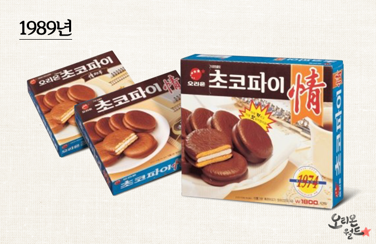

1989년은 초코파이 역사에서 가장 중요한 전환점 중 하나였습니다.
전설적인 '정(情)' 캠페인이 시작되면서 처음으로 패키지에 '情'이 등장했습니다.
단순한 과자를 넘어 사람과 사람을 이어주는 따뜻한 이야기를 담기 시작했습니다.

THE BEGINNING OF JEONG
1989년은 초코파이 역사에서 가장 중요한 전환점 중 하나였습니다.
전설적인 '정(情)' 캠페인이 시작되면서 처음으로 패키지에 '情'이 등장했습니다.
단순한 과자를 넘어 사람과 사람을 이어주는 따뜻한 이야기를 담기 시작했습니다.